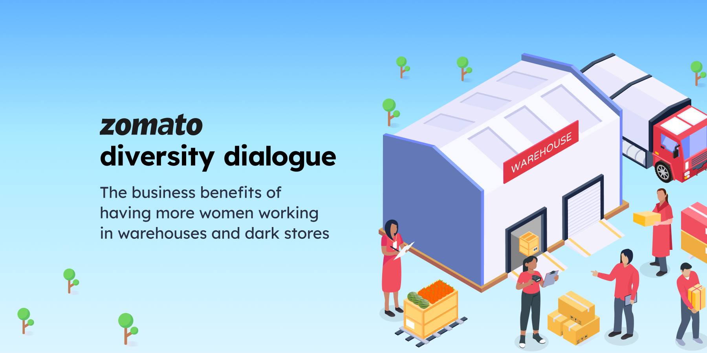
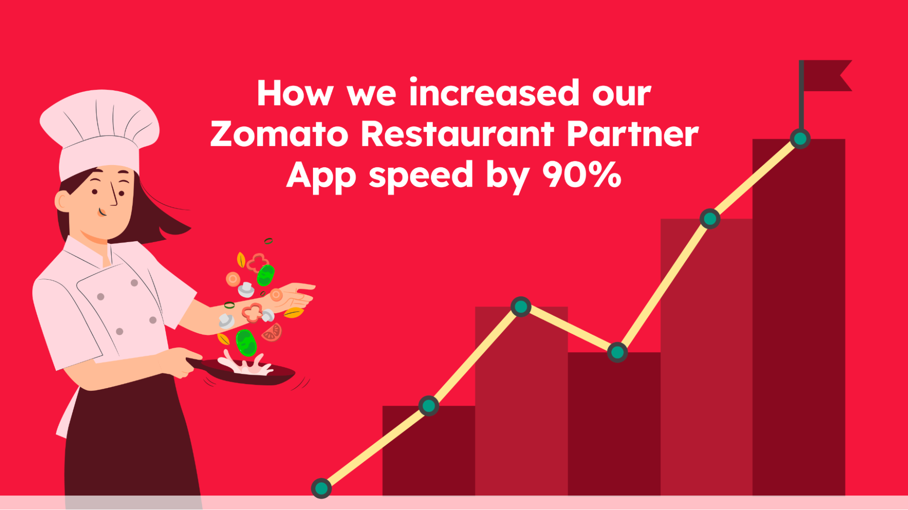
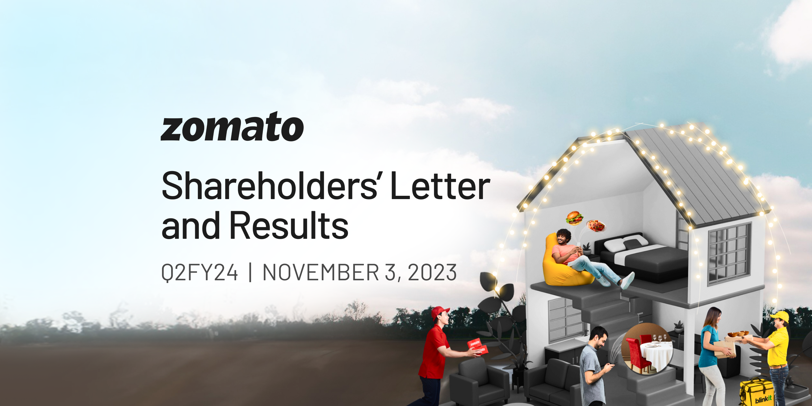

| Launched in 2010, Our technology platform connects customers, restaurant partners and delivery partners, serving their multiple needs. Customers use our platform to search and discover restaurants, read and write customer generated reviews and view and upload photos, order food delivery, book a table and make payments while dining-out at restaurants. On the other hand, we provide restaurant partners with industry-specific marketing tools which enable them to engage and acquire customers to grow their business while also providing a reliable and efficient last mile delivery service. We also operate a one-stop procurement solution, Hyperpure, which supplies high quality ingredients and kitchen products to restaurant partners. We also provide our delivery partners with transparent and flexible earning opportunities. | |
|  |  | |
|---|---|---|
| The business benefits of having more women working in warehouses and dark stores | How we increased our Zomato Restaurant Partner App speed by over 90% | |
| We want to make Zomato a place that provides equitable access to opportunities for all genders. We want to be a sustainable company that the nation, and equally importantly, our parents will be proud of, in how we help in creating a better society. As part of this effort, we have been introducing more women workers into different parts of our business, so our efforts at creating meaningful opportunities for women do not stop within the confines of our offices. | At Zomato, we understand that the success of our platform hinges on delivering outstanding service to our customers, restaurant partners and delivery partners. To achieve this, we embarked on a transformative Android engineering journey with our Zomato Restaurant Partner App, focusing on optimizing performance, enhancing the overall user experience, and bolstering app stability. |
|  |  |
|
|---|---|---|
| The business benefits of having more women working in warehouses and dark stores | How we improved our Android app startup time by over 20% with Baseline Profile | |
| We want to make Zomato a place that provides equitable access to opportunities for all genders. We want to be a sustainable company that the nation, and equally importantly, our parents will be proud of, in how we help in creating a better society. As part of this effort, we have been introducing more women workers into different parts of our business, so our efforts at creating meaningful opportunities for women do not stop within the confines of our offices. |
A seamless and speedy user experience can determine an app’s success by improving retention rates and thereby making a big difference for a business. In our commitment to providing an exceptional user experience, we utilize a wide range of optimization methods and techniques, and in this blog, we shine light on one such technique: Baseline Profiles. This game-changing approach has significantly enhanced our app’s startup, demonstrating its power in the realm of Android app optimization. |